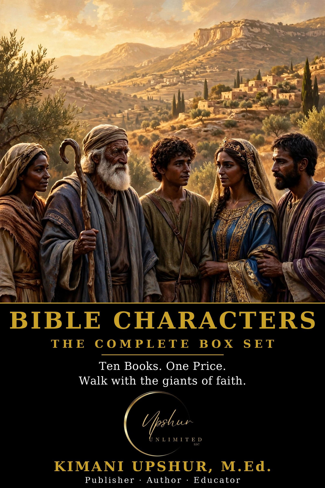

Home / Books / Box Sets & Collections

Readers Also Browse
More Box Sets & Collections titles.
Home / Books / Box Sets & Collections

More Box Sets & Collections titles.
A fresh Bible verse, reflection, and prayer in your inbox every morning.